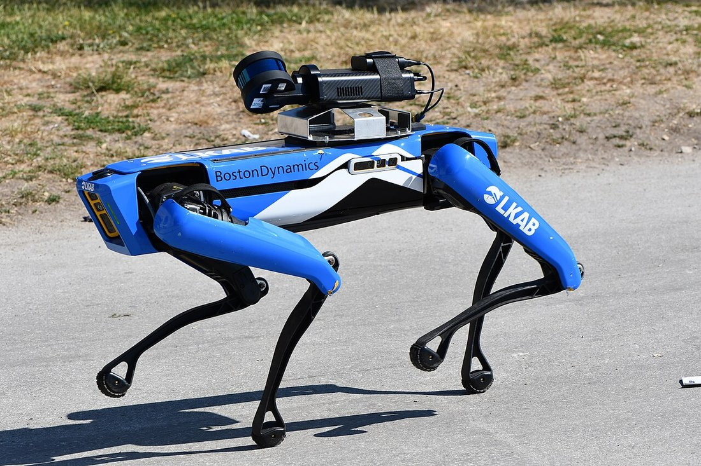
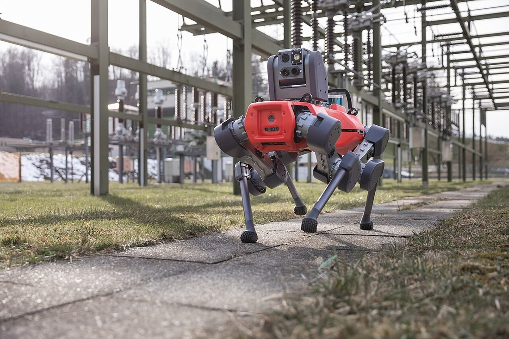
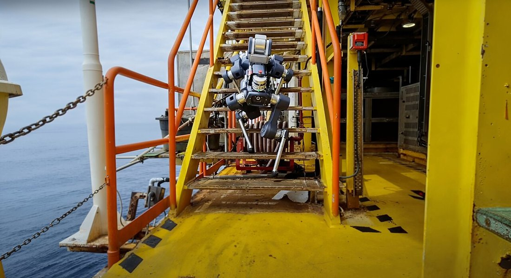
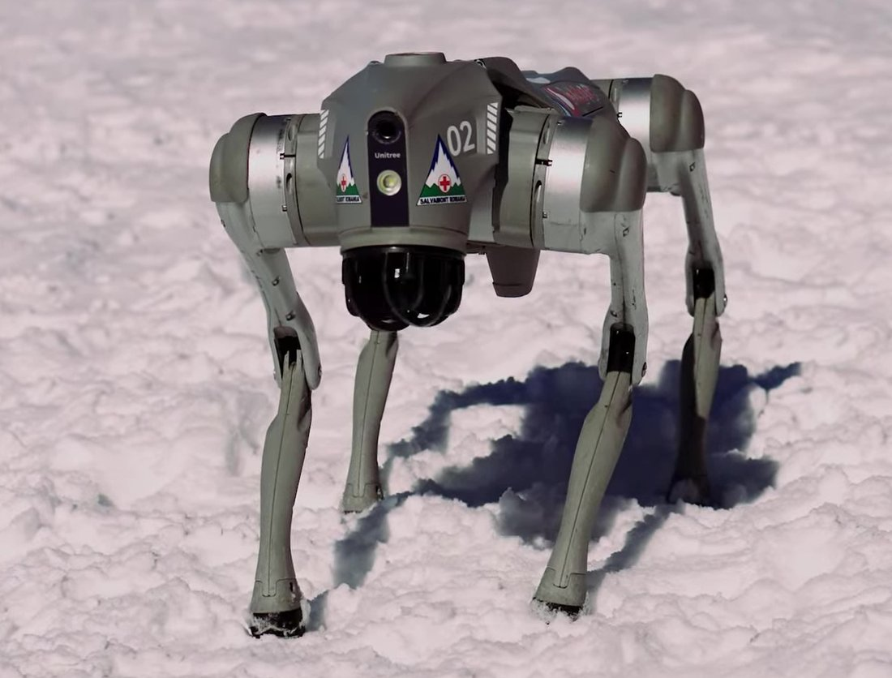
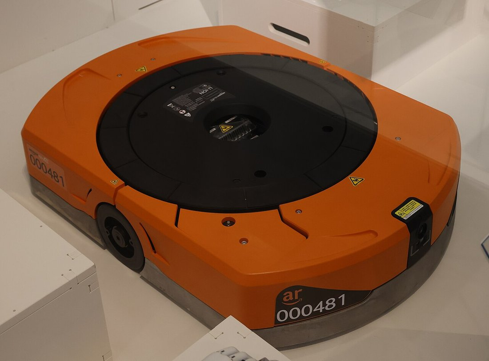
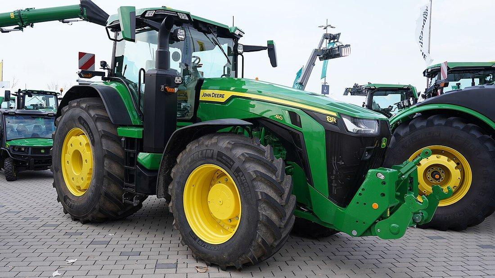
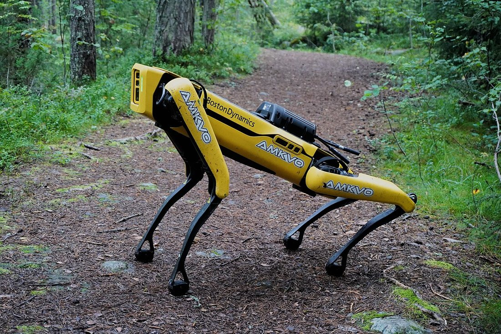
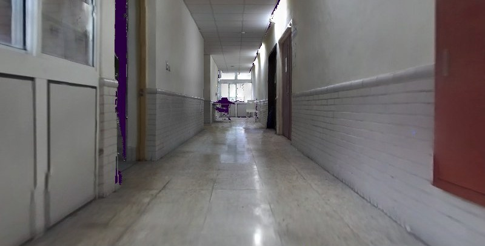

五張看懂
機器人怎麼知道自己在哪裡，又怎麼把環境畫成地圖
在沒有地圖的地方，一邊算出自己的位置，一邊把環境畫成地圖。
邊走邊記：綠點是每一刻的位置，橘點是認得的環境特徵。
走越遠誤差越大；繞回原處時認出來，就能把整條路徑修正。
SLAM 概論
雙目相機：像兩隻眼睛，靠左右影像的差異算距離；有顏色，近處最準。
8 線光達：發出 8 道雷射直接量距離；不怕暗，但點稀疏、沒有顏色。

實際上常兩種一起用：這台機器人背上就是 3D 光達。
照片：Tore Danielsson (WMSE)，CC BY-SA 4.0，維基共享資源，裁切顯示

1變電站巡檢

2海上平台巡檢

3山區搜救

4倉儲搬運

5農機：同系列已有無人版

6工廠巡檢用的四足機器人
照片取自維基共享資源，裁切顯示：1 Cvoellmy（CC BY-SA 4.0）、2 Cvoellmy（CC BY-SA 4.0）、3 HotNews Romania（CC BY 3.0）、4 Geni（CC BY-SA 4.0）、5 MarcelX42（CC BY-SA 4.0）、6 Jonte（CC BY-SA 4.0）

1.19 cm
去回程重疊誤差中位數，建模距離 7 m
約 15 分鐘
錄影檔到貼圖網格的離線運算時間
雙目相機
手持、推車，或搭載在機器人、無人車上